Префектура Окаяма · город Окаяма · современное искусство
«Рэббит Хоул» на старом тракте: как современное искусство поселилось в Окаяме
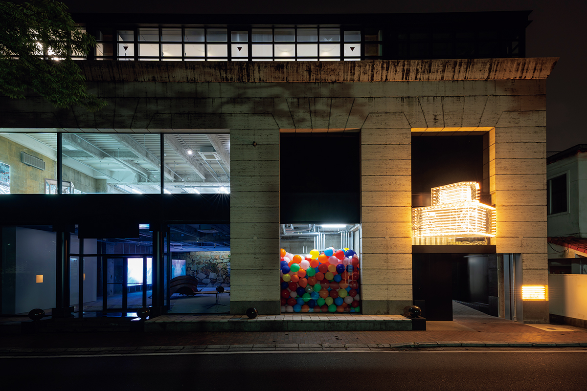
Старый тракт Санъёдо веками приводил в Окаяму торговцев и путешественников. Весной 2025 года на нём открылся «Рэббит Хоул»: музей, где искусство можно трогать руками и с которым стоит спорить.
Контекст
Дорога, которая кормила Окаяму
Тракт Санъёдо, связавший Хиого с Кюсю через Хиросиму, был главной дорогой Западной Японии, и Окаяма стояла на нём перевалочным узлом. В эпоху Эдо у подножия замка Окаяма сходились купцы, ремесленники и путешественники, а вместе с ними расцветали чайная церемония и керамика: призамковый город сложился как место, где идеи едут вместе с товарами.
Сегодня Сэтоути, Внутреннее Японское море, считают одним из главных мест современного искусства в стране: сюда едут за островными музеями и триеннале. Весной 2025 года в этом ряду появился «Рэббит Хоул», музей современного искусства, построенный фондом Исикавы. Он встал в культурном центре города, где стоят замок Окаяма, сад Коракуэн и музей Хаясибара, и смотрит на старый тракт, как на продолжение экспозиции.
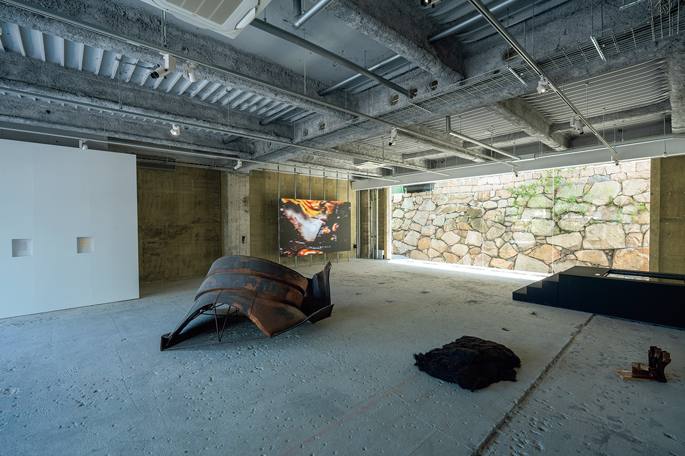
Музей
Человек, который собрал город вокруг искусства
За проектом стоит предприниматель Ясухару Исикава. Он коллекционирует современное искусство с двадцати с небольшим лет, и собрание давно переросло личную библиотеку. Исикава вместе с мэрией делал проект «Imagineering OKAYAMA ART PROJECT», он же генеральный продюсер международной триеннале «Окаяма арт саммит», идущей раз в три года, и участник программы A&C (Art & City), выпускающей искусство из залов на улицы.
«Мы хотим создать для Окамы новое очарование: городскую среду, выстроенную вокруг искусства, которое бережёт контекст истории и культуры и делает счастливее людей, живущих здесь. В основе всего лежит именно это желание.»
Ясухару Исикава
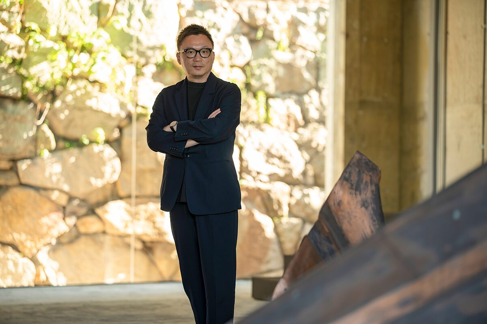
Архитектура
Пространство, оставляющее место художнику
Зданием музея стал бывший особняк в духе ренессанса, принадлежавший семье Хаясибара, давним собирателям искусства в Окаяме. Переделку доверили архитектору Дзюну Аоки, автору магазинов Louis Vuitton. Он довёл интерьеры до предельной простоты: каменная кладка старого города соседствует с белыми стенами, а всё лишнее убрано, чтобы у художников оставалось пространство на высказывание.
Ядро музея составляет «коллекция Исикавы», одно из самых характерных в стране собраний концептуального искусства. Ведут музей четыре директора разного профиля: куратор крупного музея современного искусства, галерист, архитектор Дзюн Аоки и сам Исикава. Дебютная выставка «Hyperreal Echoes» собирает 36 работ двадцати художников, среди которых Филипп Паррено и Дань Во; задумана она как долгая и пробудет в музее около трёх лет.
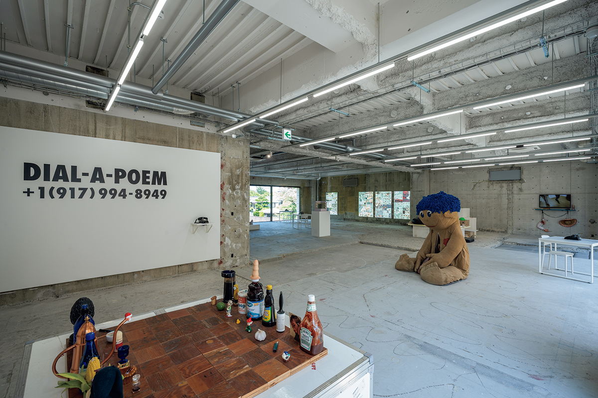
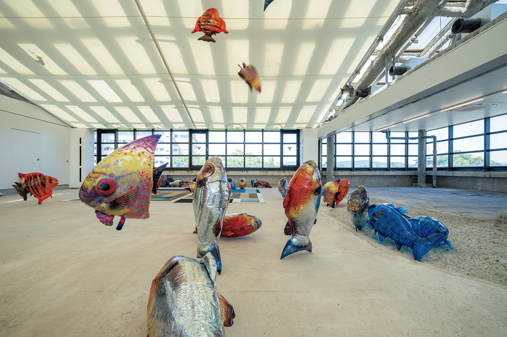
«Основа коллекции состоит из крупных объектов: инсталляций и скульптур. Кураторство мы задумали как триггер для размышлений о современной политике, о чрезмерном капитализме, о гендерных вопросах.»
Ясухару Исикава
Три работы задают выставке тон. «Marquee» (2014) Филиппа Паррено соединяет лампы классического американского кинотеатра с новейшим компьютерным программированием: старое и новое встречаются в одном световом миге. «We The People» (2011) вьетнамского художника Даня Во повторяет Статую Свободы фрагментами в натуральную величину и спрашивает, чего стоит свобода, о цене которой сегодня говорят новостные сводки. «Kitchen Set» (2003–2007) Пола Маккарти расставляет на шахматной доске фигуры из мусора: остатков кетчупа и оливкового масла. Едкая насмешка над обществом потребления, у которого всё превращается в партию.
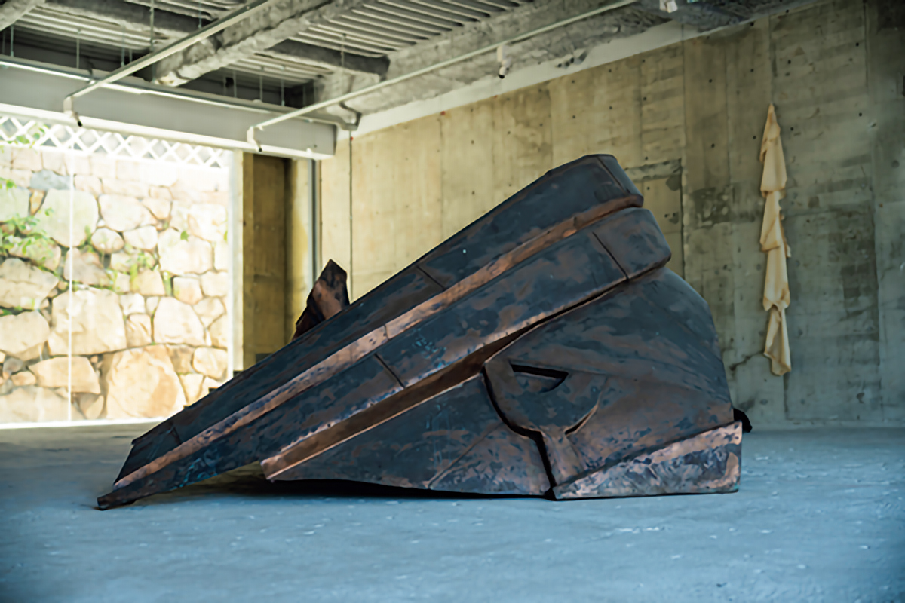
Галерея
Склад соевого соуса, где смотрят искусство
Совсем рядом, в квартале Юминотё, стоит «Рэббит Хоул» аннекс, склад «Фукуока сёю»: историческое здание старого соевого производства эпохи Мэйдзи, отреставрированное с бережным сохранением прежнего облика. С открытием музея бывший склад вошёл в новую роль: это культурный центр на стыке искусства, еды и образования.
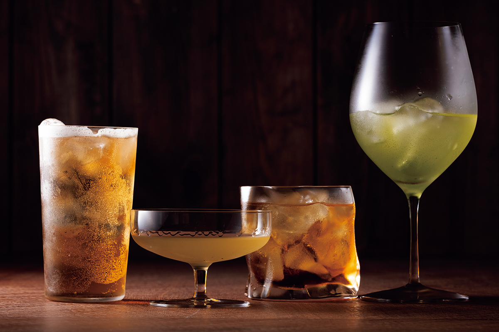
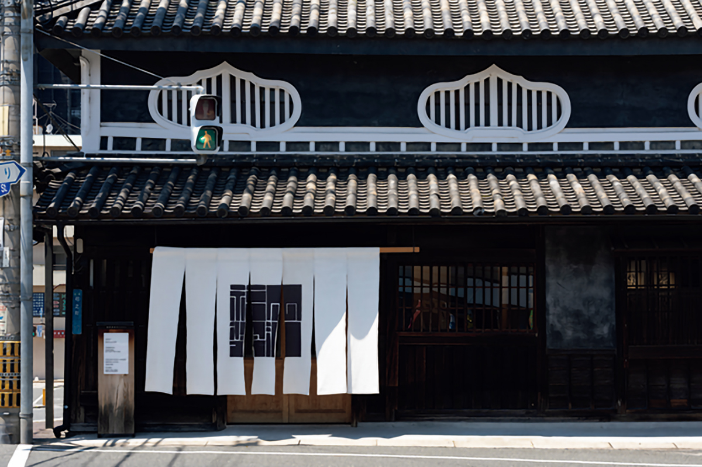
Художественную часть ведёт галерея «Фукуока сёю»: ремесленные предметы и современное искусство со всего мира здесь выставляют концептуально, каждый раз заново. К открытию весной 2025 года прошла персональная выставка британского художника Райана Гандера «Together, but not the same»: скульптура, видео, одежда, живопись и издания, то есть всё разнообразие языков, за которое его работы высоко ценят во всём мире.
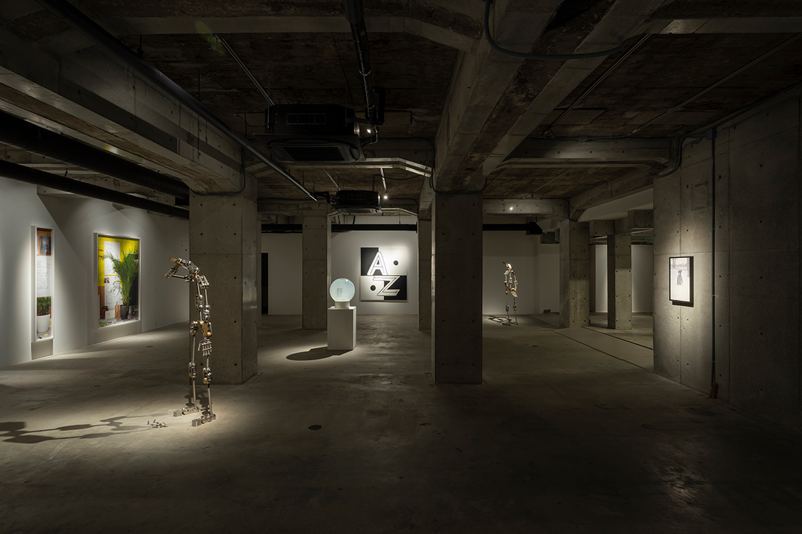
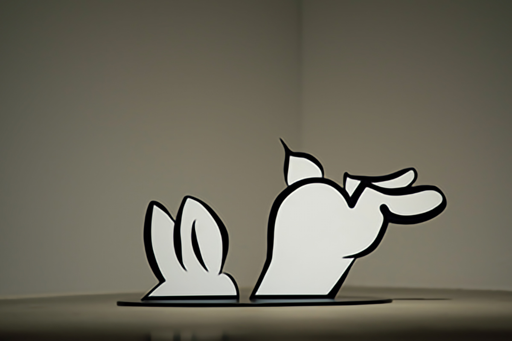
Чай
SABOE OKAYAMA: чай, сваренный заново
Соседний дом занимает лавка японского чая SABOE OKAYAMA: магазин и чайная проекта SABOE, который переосмысляет японский чай для современной жизни и передаёт его следующему поколению. Чайная устроена в отреставрированном складе: над чайным котлом поднимается пар, в курсе «маленькое чайное собрание: одна пиала, один настой» подают отборные японские чаи с сезонными сластями.
Главное здесь занимают авторские «тясю», напитки на стыке чая и сакэ. «Ходзитя-хайбол» готовят из чая, обжаренного прямо перед заказом: у напитка дымный аромат, похожий на ирландский виски. «Гёмоку-мартини» смешивает бленд гёмоку из Удзи и Ямэ с сухим сакэ. В особенные дни чай заваривает лично третий мастер чайного хозяйства «Тясасан».
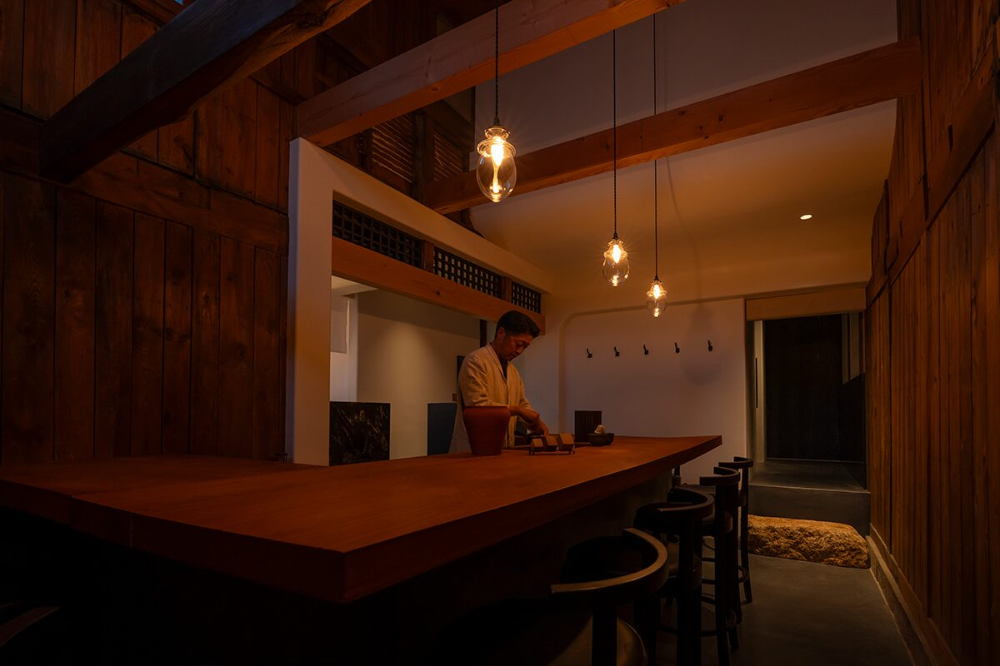
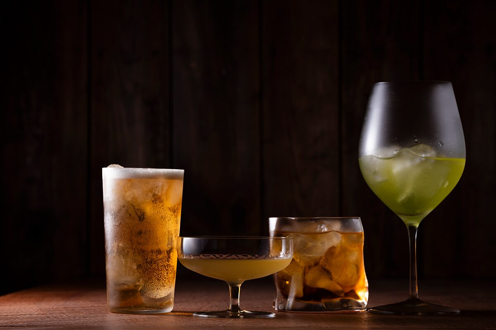
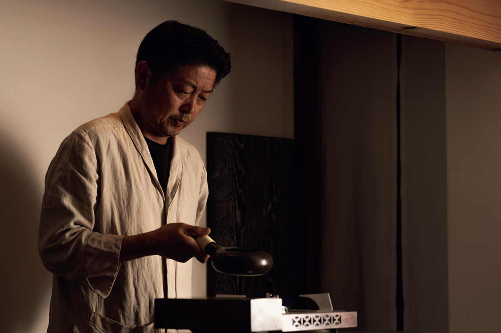
Дети
Восемнадцать и младше: бесплатно
Образовательную часть в аннексе ведёт «Нару-дзюку», школа для детей, которым трудно даётся повседневная жизнь: с нарушениями развития или интеллекта, с непосещением школы. Программа так и называется: «стать собой, каким хочешь быть». И музей, и галерея пускают всех до 18 лет бесплатно, а для школьников регулярно проходят бесплатные диалоговые осмотры выставок.
«Если будущее детей сияет, светится и весь мир. Сила современного искусства в том, что оно делает мышление гибким и показывает разные точки зрения. Хочу, чтобы, проживая этот опыт, дети развивали творческую силу, мышление и дар спорить, которые не заменит никакой искусственный интеллект.»
Ясухару Исикава
Перспектива
Что дальше
«Рэббит Хоул» не хочет быть тихим хранилищем. Исикава говорит, что главное здание можно и сломать: если художнику для работы понадобится пробить пол или прорубить потолок, ему позволят. Музей, которому дают себя перестраивать, живёт по правилам того искусства, которое показывает.
У Исикавы есть двадцатилетний план: восемнадцать аннексов, каждый отдан персональной выставке одного художника и совмещён с рестораном или лавкой; улицы, где видно, как работают мастера бидзэнской керамики и кодзимского денима; и, наконец, «арт-регион Сэтоути», где за час на машине можно увидеть и музей Охара в Курасики, и проекты фонда Фукутакэ, организатора триеннале Сэтоути. «Мы не всё делаем сами: мы сеем семена и позволяем им расти рядом со старыми культурными учреждениями, едой и хорошей архитектурой», объясняет он.
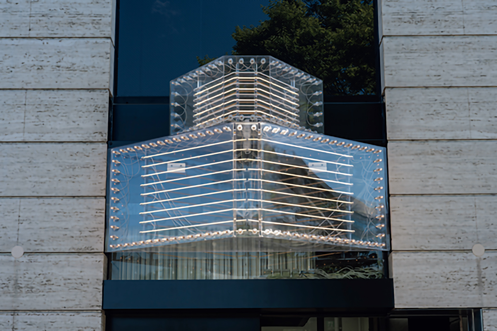
Рэббит Хоул
- Адрес
- префектура Окаяма, город Окаяма, район Кита, Маруноути, 2-7-7
- Телефон
- +81 86-230-0983
- Часы работы
- 10:00–17:00, вход до 16:30
- Выходные
- понедельник, вторник и среда (в праздничные дни открыт), новогодние каникулы, период смены экспозиции
- Цены
- взрослые 1500 иен, до 18 лет бесплатно
Галерея «Фукуока сёю»
- Адрес
- префектура Окаяма, город Окаяма, район Кита, Юминотё, 17-35
- Часы работы
- 10:00–17:00, вход до 16:30
- Выходные
- понедельник, вторник и среда (в праздничные дни открыта)
- Цены
- 1000 иен, до 18 лет бесплатно
- Сайт
- fukuokashoyu.org
SABOE OKAYAMA
- Адрес
- префектура Окаяма, город Окаяма, район Кита, Юминотё, 17-35
- Телефон
- +81 86-207-2779
- Часы работы
- лавка 11:00–17:00, чайная 13:00–23:00 (в воскресенье и праздники 13:00–17:00, в предпраздничные дни 13:00–23:00)
- Выходные
- понедельник, вторник и среда (в праздничные дни работает)
- Сайт
- saboe.jp
Фото: Рёсукэ Фудзитани, Садахо Наито.